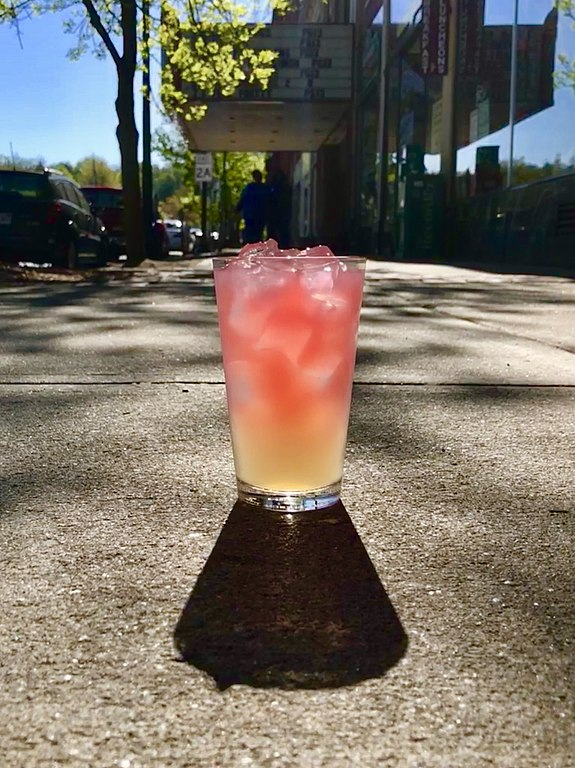

Mint Hibiscus Lemonade

Description
I'm growing Roselle hibiscus in my garden for the first
time this summer. The calyx at the base of its flowers are dried and used for
hibiscus tea. Combined with my mint planter, there will be a lot of hibiscus
and mint combos happening in my kitchen later this year! (Store-bought would
also be fine.) Now I just need to track down a lemon tree...
Ingredients
- 0.5 cups dried hibiscus calyces
- Handfull torn mint leaves (plus fresh
leaves for garnish)
- 8 cups water, divided
- 1 cup fresh-squeezed lemon juice
- 1.5 cups granulated sugar
-
Directions
- Mix hibiscus and mint leaves with 4 cups
water in a large jar, let steep overnight. (You can also just drink this herbal
tea mixture after this step!)
- Combine lemon juice, 4 cups water and sugar
in saucepan, simmer on low heat until mixture is a syrup.
- Strain hibiscus and mint out of tea
mixture, mix with lemon syrup. Chill.
- Serve over ice, garnish with fresh mint
leaves if desired.